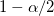
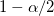
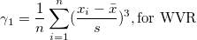
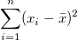
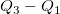
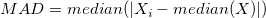

| N gesamt |
Gesamtanzahl der Datenpunkte, bezeichnet mit n |
| N fehlend |
Anzahl der fehlenden Werte |
| Mittelwert |
Der (durchschnittliche) Mittelwert
 . .
|
| Standardabweichung |
^2/d}")
wobei
Hinweis: In OriginPro hat  eine Option mehr, die im Zweig Varianzdivisor des Moments definiert ist. eine Option mehr, die im Zweig Varianzdivisor des Moments definiert ist.
|
| SE des Mittelwerts |
Standardfehler des Mittelwerts

|
| Unteres 95% KI des Mittelwerts |
Untere Grenze des 95%-Konfidenzintervalls des Mittelwerts
}\frac{s}{\sqrt{n}}")
wobei }") der  kritische Wert der Studenten-t-Statistik mit n-1 Freiheitsgraden ist. der  kritische Wert der Studenten-t-Statistik mit n-1 Freiheitsgraden ist.
|
| Oberes 95% KI des Mittelwerts |
Obere Grenze des 95%-Konfidenzintervalls des Mittelwerts
}\frac{s}{\sqrt{n}}")
wobei der kritische Wert der Studenten-t-Statistik mit n-1 Freiheitsgraden ist.
|
| Varianz |
 |
| Summe |
 . . |
| Schiefe |
Die Schiefe misst den Grad der Asymmetrie einer Verteilung. Sie wird definiert als
^3,\mbox{for N}")

|
| Kurtosis |
Die Kurtosis zeigt den Grad der Peaks einer Verteilung an.
^4 -3,\mbox{for N}")
^4 -3,\mbox{for WVR}")
|
| Unkorrigierte Summe der Quadrate |

|
| Korrigierte Summe der Quadrate |

|
| Variationskoeffizient |

|
| Mittelwert Absolutabweichung |

|
| SD mal 2 |
Standardabweichung mal 2

|
| SD mal 3 |
Standardabweichung mal 3

|
| Geometrische Mittelwert |
|
| Geometrische StAbw |
Die geometrische Standardabweichung }") , wobei std für die ungewichtete Standardabweichung der Stichprobe steht. , wobei std für die ungewichtete Standardabweichung der Stichprobe steht.
Hinweis: Gewichtungen werden für die geometrische Standardabweichung ignoriert.
|
| Modus |
Der Modus ist das Element, das am häufigsten im Datenbereich auftaucht. Wenn mehrere Modi gefunden werden, wird das kleinste gewählt.
|
| Harmonisches Mittel |
Harmonisches Mittel
ohne Gewichtung:
mit Gewichtung: ^{-1}")
wenn  oder Gewichtung negativ ist, wird Fehlende weitergegeben; wenn oder Gewichtung 0 ist, wird 0 weitergegeben. oder Gewichtung negativ ist, wird Fehlende weitergegeben; wenn oder Gewichtung 0 ist, wird 0 weitergegeben.
|
Sortieren Sie den Eingabedatensatz in aufsteigender Reihenfolge. Angenommen}\,\!") ist das i-te Element des neu geordneten Datensatzes.
ist das i-te Element des neu geordneten Datensatzes.
| Minimum |
|
| Index des Minimums |
Die Indexnummer des Minimums im ursprünglichen (Eingabe-)Datensatz
|
| 1. Quartil (Q1) |
Erstes (25%) Quantil, Q1 Informationen zu Berechnungsmethoden finden Sie unter Interpolation von Quantilen. |
| Median |
Median oder zweites (50%) Quantil, Q2 Informationen zu Berechnungsmethoden finden Sie unter Interpolation von Quantilen. |
| 3. Quartil (Q3) |
Drittes (75%) Quantil, Q3 Informationen zu Berechnungsmethoden finden Sie unter Interpolation von Quantilen. |
| Maximum |
}\,\!") |
| Index des Maximums |
Die Indexnummer des Maximums im ursprünglichen (Eingabe-)Datensatz
|
| Interquartilbereich (Q3-Q1) |

|
| Spannweite (Maximum-Minimum) |
Maximum - Minimum
|
| Benutzerdefinierte Perzentil(e) |
Benutzerdefinierte Perzentile können berechnet werden.
|
| Perzentilliste |
Diese Option ist nur verfügbar, wenn Benutzerdefinierte Perzentil(e) aktiviert ist. Perzentile werden für alle aufgeführten Werte berechnet.
|
| Mittlere absolute Abweichung (MAD) |
Für einen univariaten Datensatz X1, X2, ..., Xn, wird MAD als Median der absoluten Abweichungen vom Median der Daten definiert:

das heißt, angefangen bei den Residuen (Abweichungen) vom Median der Daten, ist die mittlere absolute Abweichung MAD der Median ihrer absoluten Werte.
|
| Robuster Variationskoeffizient |
)/Median\,")
|
 , Nach unten verschieben
, Nach unten verschieben  , Entfernen
, Entfernen  , Alle auswählen
, Alle auswählen  , Auswählen
, Auswählen  . Sie befinden sich auf der Symbolleiste
. Sie befinden sich auf der Symbolleiste  .
. die i-te Gewichtung.
die i-te Gewichtung.

 Perzentil y wie im Folgenden beschrieben:
Perzentil y wie im Folgenden beschrieben:
}, & \mbox{if }g=0 \\ x_{(j+1)}, & \mbox{if }g>0 \end{cases}")
+p)}\,\!")
x_{(j)}+gx_{(j+1)}\,\!")
}\,\!")
}")

}\,\!")
},& \mbox{if }m\mbox{ is odd}\\ \frac{1}{2}(x_{(k)}+x_{(k+1)}), & \mbox{if }m\mbox{ is even} \end{cases}")
}\,\!")